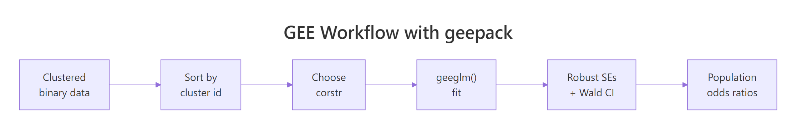
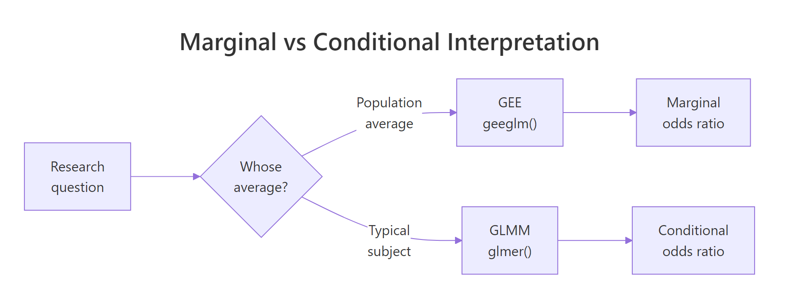

GEE for Correlated Categorical Data in R: geepack Population Averages
Generalized estimating equations (GEE) extend logistic regression to handle clustered or repeated yes/no measurements, like four respiratory checks on the same child. The geepack package's geeglm() fits these models in one line and returns population-averaged effects with robust standard errors, so coefficients describe the average change across the population rather than within a single subject.
Why does standard logistic regression fail on clustered yes/no data?
Suppose 537 children each get four wheeze checks across ages 7-10. Treating those 2,148 records as independent inflates the apparent sample size and shrinks standard errors, so a noisy maternal-smoking effect can look highly significant. GEE corrects for that within-child correlation while still answering a marginal question, what the population-average odds of wheezing look like under different conditions, using the geepack package.
Let's see the difference in one shot. We fit a plain glm() (which assumes every row is independent) and a geeglm() (which knows the rows come in clusters of 4 per child) and put their coefficients side by side.
Point estimates barely move, but the standard error for smoke doubles under GEE, from 0.088 to 0.178. The naive glm() thinks it has 2,148 independent observations and shrinks the SE accordingly. GEE recognises that responses within a child are correlated and widens the SE to reflect the true information content. The same coefficient, honestly priced, is the whole point.
Try it: The ohio dataset has 537 children with 4 visits each. Use length(unique(ohio$id)) and nrow(ohio) to confirm the cluster size, then save the average observations per child to ex_obs_per_child.
Click to reveal solution
Explanation: Dividing total rows by the number of unique ids gives the average cluster size. A balanced design like ohio has the same value for every child.
library(geepack) errors with a "no package called" message, install it once with install.packages("geepack") and re-run the loader. The package is on CRAN, has no exotic system dependencies, and ships the ohio and respiratory datasets used below.How do you fit a binary GEE model with geepack?
The fitting call is geeglm(formula, id, data, family, corstr). Four arguments do almost all the work: the formula behaves exactly like in glm(), id names the clustering variable, family = binomial selects the logit link for binary outcomes, and corstr sets the working correlation structure (we will compare options in the next section).
The summary output looks similar to glm() but with two crucial differences: the standard errors are sandwich (robust) by default, and a working correlation parameter is reported at the bottom.
Three things worth noting. First, Std.err here is the sandwich (robust) SE, not the model-based one. Second, the test column is Wald (z-squared), so the chi-square shown equals (Estimate / Std.err)². Third, alpha = 0.3548 is the within-child correlation between any two visits, the single number the exchangeable structure assumes.
geeglm() assumes rows belonging to the same id are contiguous. Run ohio <- ohio[order(ohio$id, ohio$age), ] before fitting if your data could be shuffled, otherwise observations get assigned to the wrong cluster and the correlation estimate is garbage.For interpretation, log-odds are awkward. We exponentiate to get odds ratios, and we use the robust covariance matrix to build the 95% Wald confidence intervals.
Each year of age multiplies the odds of wheezing by 0.89, so wheezing prevalence falls about 11% per year. Maternal smoking multiplies the odds by 1.30 on average, but its 95% CI [0.92, 1.85] crosses 1, so the effect is not statistically distinguishable from no effect at the 5% level. Compare this to the naive glm() result, where the smoke CI was much narrower and the effect appeared significant.
Try it: Extract just the odds ratio for smoke from the fitted model and save it to ex_smoke_or.
Click to reveal solution
Explanation: coef() returns a named vector, so we index by "smoke" and exponentiate to convert log-odds to odds.

Figure 1: The geepack GEE workflow from clustered data to population-averaged odds ratios.
Which working correlation structure should you choose?
The correlation structure is your hypothesis about how observations within a cluster relate to each other. geepack supports four common shapes, each best suited to a different study design.
| Structure | Assumes | Use when |
|---|---|---|
independence |
Zero within-cluster correlation | Clusters are very small or you only care about marginal effects |
exchangeable |
Equal correlation ρ between any two within-cluster observations | Repeated measures with no time ordering, e.g. siblings |
ar1 |
Correlation decays geometrically with time gap: ρ, ρ², ρ³, ... | Evenly-spaced longitudinal observations |
unstructured |
Every pair (j, k) has its own ρⱼₖ | Few timepoints, large n, no a priori shape |
We can fit all four on ohio and compare them with QIC, the GEE analogue of AIC for choosing among non-nested models with possibly different working correlations.
The exchangeable structure has the lowest QIC, narrowly beating ar1 and unstructured. Independence is the worst fit by 12 points. Smaller QIC means the working correlation is closer to the truth, so for ohio we go with exchangeable.
corstr is wrong, so a misspecified structure still gives correct CIs and tests, just slightly wider than they could be. QIC selection optimises for narrower CIs, not for unbiased estimates.Try it: Refit the model with corstr = "ar1" and pull out its working correlation parameter from the summary. Save it to ex_ar1_corr.
Click to reveal solution
Explanation: summary() returns a list, and the corr element holds the estimated correlation parameter(s). For ar1 there is one alpha that gives ρ for adjacent visits; the gap-2 correlation is alpha² ≈ 0.25.
How do you interpret robust ("sandwich") standard errors?
The standard error column in summary(fit_gee) is not the model-based SE you would get from naively inverting the information matrix. It is the sandwich estimator, named for its bread-meat-bread structure:
$$V_R = A^{-1} \, B \, A^{-1}$$
Where $A$ is the model's "bread" (the information matrix you would compute under the assumed working correlation) and $B$ is the "meat" (the empirical variance of the score contributions, summed across clusters). The sandwich is the workhorse of GEE inference: it converges to the right SE even when the working correlation is wrong, as long as the mean structure (the regression formula) is correct.
To build a 95% Wald CI by hand from the robust covariance, take the square root of the diagonal of vcov():
The z column matches the square root of the Wald chi-square from summary(), and the CIs match what you would get on the log-odds scale before exponentiating. This is exactly what geeglm() reports internally; doing it by hand is just to demystify the box.
geesmv or simply prefer mixed models when n_clusters is small. The number of observations per cluster does not rescue you here.Try it: Build a tidy data frame ex_ci_table with three columns (term, OR, ci95) where ci95 is a string like "[0.819, 0.974]" formatted from the bounds.
Click to reveal solution
Explanation: sprintf("[%.3f, %.3f]", lower, upper) formats the two CI endpoints into a readable string. We exponentiate the log-odds bounds to get OR-scale CIs.
When should you use GEE vs a mixed-effects model?
Both GEE and generalised linear mixed models (GLMM, e.g. lme4::glmer) can analyse clustered binary data, but they answer subtly different questions and produce numerically different coefficients.
GEE (geeglm) |
GLMM (glmer) |
|
|---|---|---|
| Inference target | Population average | Subject-specific (conditional on random effect) |
| Coefficient meaning | Change in average log-odds across the population | Change in log-odds for a typical individual |
| SE method | Sandwich (robust) | Likelihood-based |
| Missing data | Need MCAR for consistency | OK with MAR |
| Best when | Marginal interpretation matters (e.g. public-health policy) | Subject-level prediction matters (e.g. personalised medicine) |
The same dataset gives different numbers under each. Take the smoke coefficient from our GEE fit (log-odds 0.265, OR 1.30) and turn it into a one-sentence population-averaged interpretation:
Notice the phrase "on average across the population". A glmer fit would yield a smoke coefficient slightly larger in magnitude (because it conditions on the child's random intercept), but you would interpret it as "for a child whose underlying tendency to wheeze is average". Same data, different question, different number.

Figure 2: GEE answers a population-average question, mixed models answer a subject-specific one.
Try it: Write a one-sentence interpretation of the age coefficient (log-odds = -0.1133, OR = 0.893) on the population scale. Save the sentence string to ex_age_text.
Click to reveal solution
Explanation: A 1-unit OR of 0.89 means the odds shrink by (1 - 0.89) = 11% per unit increase in the predictor. The "on average across the population" framing is what makes this a marginal interpretation.
Practice Exercises
Exercise 1: Fit GEE with a smoke × age interaction
Refit the ohio model with an interaction between maternal smoking and age, using exchangeable correlation. Extract the OR for the interaction term and decide whether the smoke effect grows or shrinks with age.
Click to reveal solution
Explanation: The interaction OR is 1.06, so for each extra year of age the maternal-smoking odds ratio is multiplied by 1.06 (it grows slightly). At age 0 the smoke OR is 1.30; at age 1 it is 1.30 × 1.06 ≈ 1.38. The interaction is small and likely not significant, but the direction tells you the gap between smoke and non-smoke groups widens with age.
Exercise 2: Pick the best correlation structure for the respiratory dataset
Fit GEE models on geepack::respiratory (binary outcome, predictors treat + sex + age + baseline, id is the subject) using all four correlation structures, then pick the lowest-QIC structure and print its odds-ratio table.
Click to reveal solution
Explanation: Exchangeable wins on QIC. The treatP odds ratio is 0.44, meaning placebo patients have 0.44× the odds of a "good" outcome compared with active treatment, equivalent to active treatment giving roughly 1/0.44 ≈ 2.3× the odds of "good". (treat is coded with placebo as the reference group depending on factor order, always check the levels.)
Complete Example
Here is the end-to-end workflow on geepack::respiratory: 111 subjects, 4 visits each, binary outcome (good/poor respiratory status), treatment vs placebo, with sex, age, and baseline status as covariates.
The headline result is treatA OR = 3.88 (95% CI [2.25, 6.70], p < 0.001): patients on the active treatment have nearly 4× the odds of a "good" respiratory outcome on average across the population, after adjusting for sex, age, baseline status, and study centre. Older patients have slightly worse odds (OR 0.98 per year), and patients with a "good" baseline are 4× more likely to stay good. Sex is not significant. Centre 2 fares better than centre 1.
Summary
| Concept | Take-away |
|---|---|
| Why GEE | Adjusts SEs for within-cluster correlation in marginal models |
geeglm() args |
formula, id, data, family, corstr |
| corstr choices | independence / exchangeable / ar1 / unstructured |
| Default SEs | Sandwich (robust), valid even if corstr is misspecified |
| Selection | Use QIC() to compare correlation structures |
| Interpretation | Population-averaged, not subject-specific |
| When not to use | Fewer than 40 clusters, or when you need subject-specific predictions |
References
- Halekoh, U., Højsgaard, S., & Yan, J. (2006). The R Package geepack for Generalized Estimating Equations. Journal of Statistical Software, 15(2). Link
- Liang, K-Y., & Zeger, S.L. (1986). Longitudinal data analysis using generalized linear models. Biometrika, 73(1), 13-22. Link
- Pan, W. (2001). Akaike's Information Criterion in Generalized Estimating Equations. Biometrics, 57, 120-125. Link
- CRAN, geepack package documentation. Link
- UVA Library StatLab, Getting Started with GEE. Link
- Hardin, J.W., & Hilbe, J.M. (2013). Generalized Estimating Equations, 2nd ed. Chapman & Hall/CRC. Link
- Agresti, A. (2013). Categorical Data Analysis, 3rd ed. Wiley, Chapter 13. Link
Continue Learning
- Logistic Regression in R: Complete Guide with Diagnostics & Interpretation, the foundation that GEE extends to clustered data.
- Categorical Data in R, foundational tools for working with factors and contingency tables.
- Mixed ANOVA in R, the subject-specific counterpart for repeated measures with continuous outcomes.